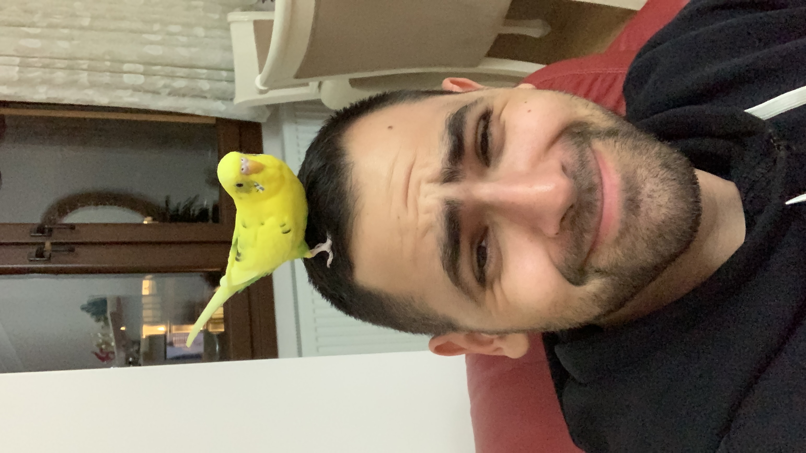

Willkommen zu meinem Online-Resümee
Mert Sahiner

Summary
Mein Ziel ist es, ein Leben lang zu lernen
und mich weiterzuentwickeln.
Bildung
- Bachelor of Arts, Schutzpolizei -
Hessische Hochschule für Polizei und Verwaltung
(2015 - 2018)
Berufserfahrung
Fertigkeiten
Sprachkenntnisse
- Deutsch - Muttersprache
- Türkisch - Muttersprache
- Englisch - B2 Selbstständige Sprachkenntnisse
- Spanisch - A1 Grundkenntnisse
Auszeichnungen